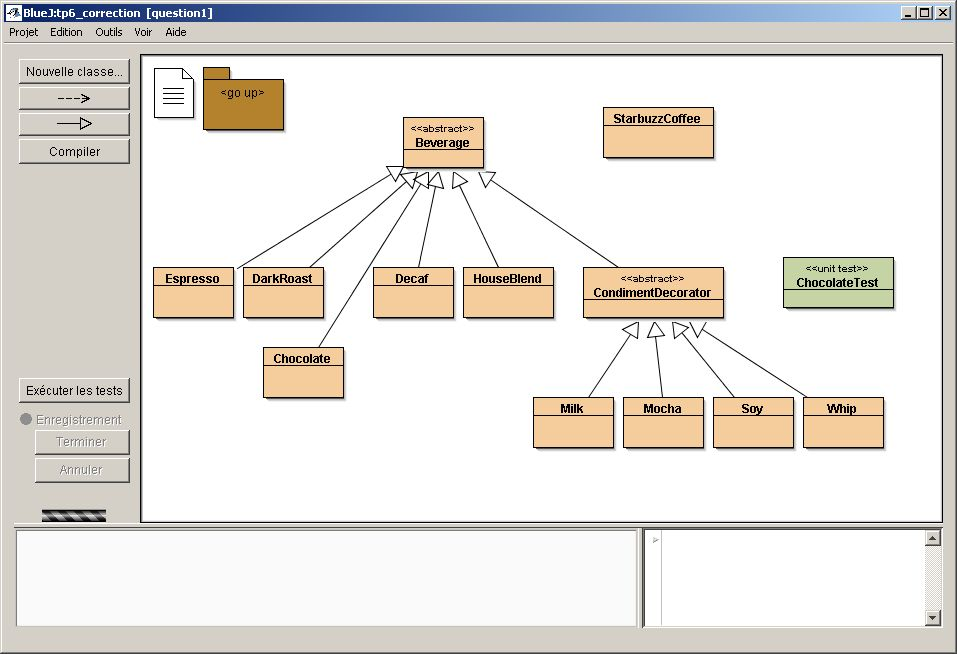
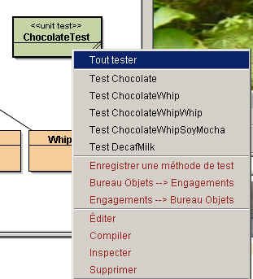
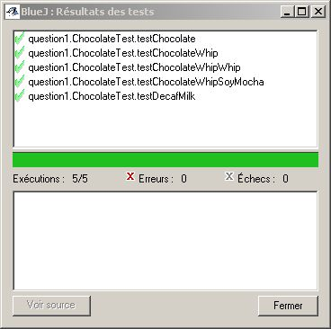
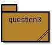

Le
décorateur de boisson
Le
décorateur de boisson TP 7
Thèmes :
|
Le
décorateur de boisson
L'exemple présenté dans le chapitre 3 extrait de Head First Design Patterns, décrit une boisson et des compléments possibles. Le pattern décorateur est utilisé afin, de "décorer" la boisson choisie avec les souhaits d'un client d'une part, et de fournir au client le prix exact de la boisson qu'il a commandée d'autre part.
Exemple : un café corsé avec du lait, s'écrit:
Beverage darkRoastWithMilk = new Milk( new DarkRoast());et l'obtention de son prix :
double price = darkRoastWithMilk.cost();

Les différentes boissons héritent de la classe abstraite Beverage,
La classe abstraite CondimentDecorator, instance du pattern Décorateur, représente les exigences possibles du client...
en ajoutant le chocolat (classe Chocolate) comme boisson; le coût de cette boisson est de 2.10
avec toutes les méthodes correspondant aux boissons suivantes :
- un chocolat seul
- un chocolat avec de la crème(Whip)
- un chocolat avec deux rations de crème
- un chocolat avec de la crème, du soja(soy) et du moka(mocha),... ( les goûts ne se discutent pas ...)
- un café décaféiné avec du lait
Remarque: le 3ème paramètre d'assertEquals est la précision de comparaison entre 2 réels.


(classe BeetSugar), dont le coût est de 0.1, sa description : "Beet Sugar".
qui se contente de retourner la description et le coût du produit choisi par le client,
selon ce format description $costun exemple et la trace attendue
Beverage b = new BeetSugar( new Whip( new Mocha( new Soy( new HouseBlend() ) ) ) );
System.out.println(b);trace obtenue: House Blend Coffee, Soy, Mocha, Whip, Beet Sugar $1.44

AST du TP4 et Sérialisation java
On reprend le TP4 avec ses Expressions arithmétiques, ses Expressions booléennes et ses Instructions.
Rappel : cet ensemble de Classes permet de spécifier les Arbres de Syntaxe Abstraite (AST) de petits programmes du petit langage : 'WhileL'.
Exemple :
| Programme |
x := 5; |
| AST |
New Sequence( |
.1
: compléter les classes suivantes par l'AST correspondant au Programme donné en
commentaire et rappelé dans le tableau suivant.
(Remarque : c'est un exercice d'écriture .!.).
| Nom de la Classe | Programme (commentaire) |
|---|---|
| AST_Fact |
xxx:=n ; |
| AST_Mult1 |
produit = 0 ; |
.2
: Vérifiez avec la classe de Test (Junit/BlueJ) fournie que l'évaluation d'objets
instances de toutes vos Classes écrites en Q2.1 donnent les résultats attendus.
.3
: Construire la Classe "boite à outils" JAVASerialiseDeserialise qui contient
les méthodes statiques :
serialjava( progr , nomDuFichier) devra génèrer la sérialisation de 'progr' dans le fichier 'nomDuFichier'
deserialjava('nomFichier') lit le fichier 'nomFichier' qui doit contenir un objet JAVA de type 'IProgr' sérialisé et retourne cet objet .
.4
: Vérifier avec la classe de Test (Junit/BlueJ) que les évaluations de (Q1.2) et
de nouvelles évaluations après sérialisation et désérialisation donnent des
résultats identiques.
Remarque : ATTENTION, avant sérialisation il faut rendre les classes à sérialiser "Serializable"...
 AST vers XML
-1) (Retour sur le TP4 (le langage WhileL) : Ajouter les visiteurs JDOM pour 'Expression' , 'ExpressionBooléenne' permettant de générer le code XML pour les AST de programmes WhileL. Vous Respecterez le format XML suggéré par le fichier XML de AST_Fact :
|
fichier "AST_Fact.xml" |
|---|
<?xml version="1.0" encoding="UTF-8"?> |
-2) Construire la classe "boite à outils" SerialiseDeserialiseAST_XML qui contient les méthodes statiques :
Remarques :
Remarque : Hélas, par 'deserialXml2ast' on ne récupère pas un Objet de classe IProgr sauf à utiliser des api spécialisées comme les api Beans ou JaxB (qui ne sont pas étudiées dans le cadre de ce cours). Donc il faut recréer l'AST "à la main"...
-3) Dans la Classe XML2AST complétez la méthode statique
public static Instruction xmlInst2ast(Contexte m, Element element) qui permet de reconstruire un ast (cf. Question2) à partir d'un Elément XML.
-4) Vérifier avec les classes de Test (Junit/BlueJ) que les évaluations de (3.2) et de nouvelles évaluations après sérialisation-XML et désérialisation -XML + reconstruction de l'AST donnent des résultats identiques.